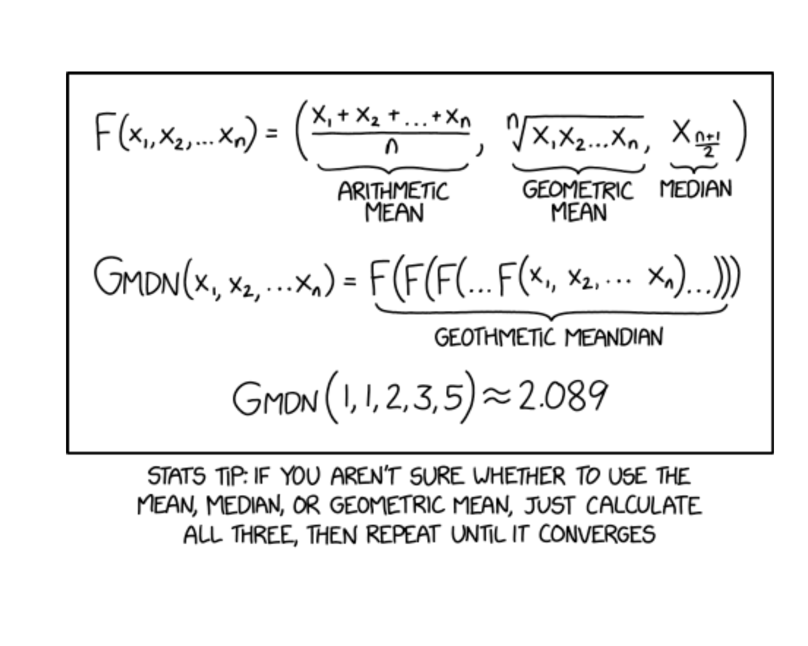
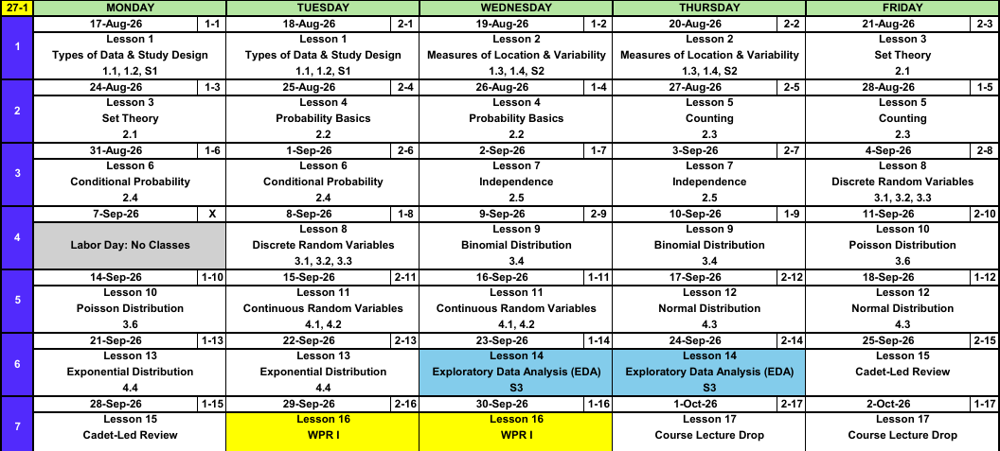
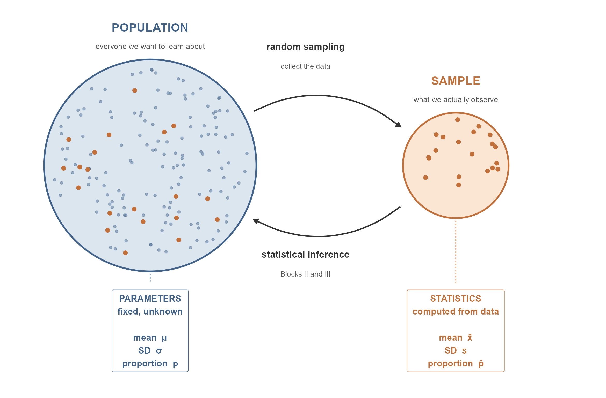
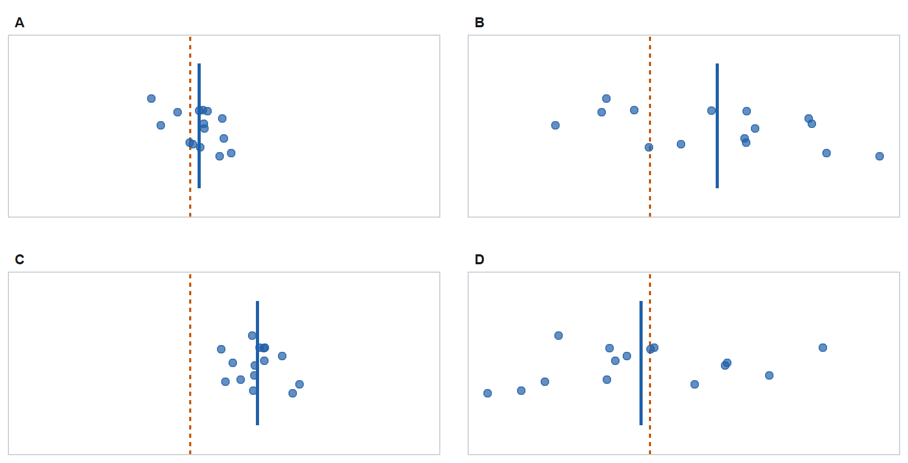
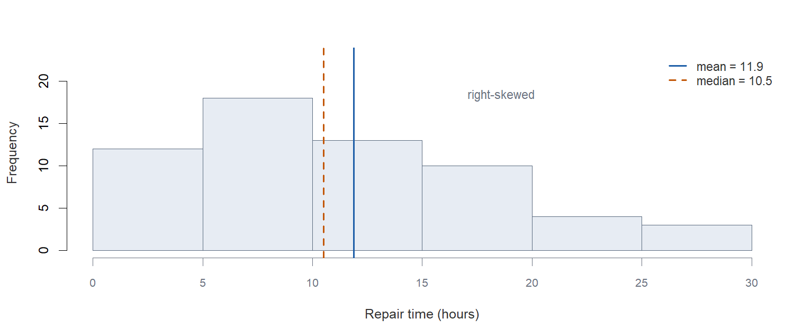
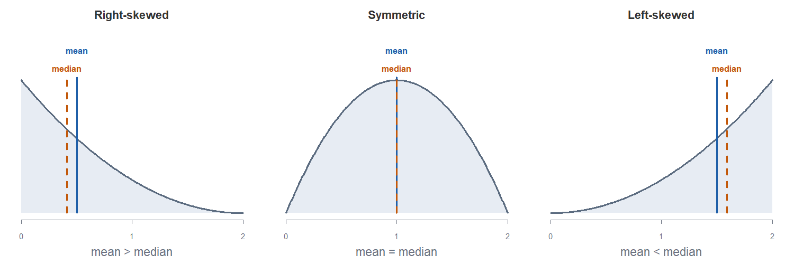
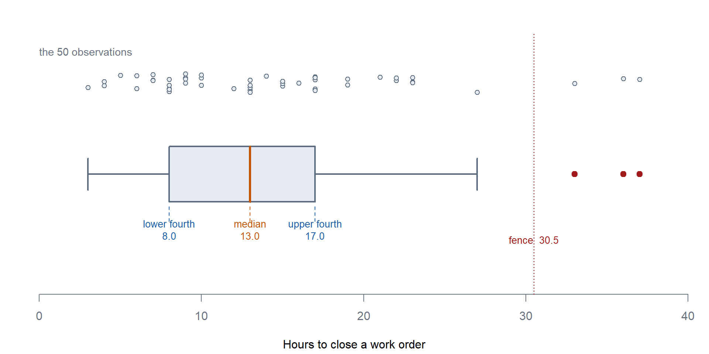

Lesson 2: Measures of Location & Variability
Calendar

Open Vantage
Before anything else, everyone needs an account on Army Vantage, the Army data platform we will use for the course project.
- Go to https://vantage.army.mil/
- Click Request Account
- Fill out the required information
- For Commander email, use:
dusty.s.turner.mil@army.mil - Approval can take a day or two, so do this now, not in October
Your project uses real data from an actual Army unit hosted inside Vantage. The first graded project event is the Exploratory Data Analysis at Lesson 14, and you cannot start it without an account.
Academic Integrity
- Document and acknowledge all assistance IAW the current DAAW.
- Every graded event states what help is authorized. Ask if you are unsure.
- Never assume an allowance that an assignment has not stated.
Questions About the Course?
?
What We’re Doing: Lesson 2
Objectives
- Compute and interpret the sample mean, median, and trimmed mean, and their sensitivity to outliers. (SLO 2)
- Compute and interpret the sample variance, standard deviation, range, and fourth spread (IQR). (SLO 2)
- Construct and interpret boxplots and comparative boxplots, and identify outliers. (SLO 2)
Required Reading
Devore 1.3, 1.4 and Supplement S2
Break!
Reese
Cal
Lesson 1 Review
Parameters vs Statistics

| Population | Sample | |
|---|---|---|
| What we have | Usually unknown | Observable data |
| What we call it | Parameter | Statistic |
| Notation | Greek letters (\(\mu\), \(\sigma\), \(p\)) | Latin letters (\(\bar{x}\), \(s\), \(\hat{p}\)) |
A statistic is computed from the sample and is used to estimate a parameter. Every time you see a number in this course, ask which one it is. If it came from data, it is a statistic, and it will be a little bit wrong. Quantifying how wrong is Block II.
The Big Picture
Why do we collect data? Because we want to learn about something bigger than what we can directly observe.
| Term | Definition |
|---|---|
| Population | The entire collection of objects or individuals we want to learn about |
| Sample | The subset of the population we actually observe |
Descriptive statistics summarizes the data you have. Inferential statistics uses that sample to make a claim about the population you cannot see. The whole course is built on that move.

Collecting Data
How you got the data limits what you are allowed to say about it.
| Random sample | Not a random sample | |
|---|---|---|
| Random assignment (experiment) |
Causation, generalizes to the population | Causation, these subjects only |
| No random assignment (observational) |
Association only, generalizes to the population | Association only, these subjects only |
Random assignment buys causation. Random sampling buys generalization.
Types of Data
| Type | Definition | Example |
|---|---|---|
| Categorical | A label or category | Branch, company, pass/fail |
| Numerical, discrete | Values can be listed, usually counts | Vehicles deadlined |
| Numerical, continuous | Values form an interval | Repair time, distance, weight |
The type of variable determines how you summarize it, how you picture it, and which inference method you will use in Block II.
| Variable type | Summarize with | Picture with | Block II method |
|---|---|---|---|
| Categorical | Proportion \(\hat{p}\) | Bar chart | \(z\) procedures for proportions |
| Numerical | Mean \(\bar{x}\), SD \(s\) | Histogram, boxplot | \(t\) procedures for means |
A variable coded with numbers is not automatically numerical. Company coded 1-9, or a 1-5 satisfaction rating, is still categorical. Ask whether the arithmetic means anything: is the average of Company 2 and Company 4 really Company 3?
Histograms
A histogram splits the number line into bins of equal width, counts how many observations land in each bin, and draws a bar of that height. It answers three questions at a glance: where is the data centered, how spread out is it, and what shape does it have?

Repair times for 60 jobs. Notice what the long right tail does: it drags the mean above the median. The mean follows the tail; the median does not. That observation is the bridge into today’s material.
To read a histogram, report center, spread, and shape, then say whether anything is unusual. Outliers and gaps are findings, not nuisances.
Describing Shape

Shape is named for the direction the tail runs.
| Shape | Tail | Center |
|---|---|---|
| Right-skewed (positively skewed) | Runs right | mean > median |
| Symmetric | Halves mirror each other | mean \(\approx\) median |
| Left-skewed (negatively skewed) | Runs left | mean < median |
Lesson 2 Content
Lesson 1 gave us pictures of a distribution. Today we put numbers on the two things those pictures showed us: where the data sits, and how spread out it is. We will do all of it with one data set, start to finish.
The Data
A battalion maintenance section records the number of hours to close out each of 50 work orders. Sorted, the data are:
3, 4, 4, 5, 6, 6, 7, 7, 7, 8, 8, 8, 8, 8, 9, 9, 9, 9, 10, 10, 10, 12, 13, 13, 13, 13, 13, 13, 14, 15, 15, 15, 16, 17, 17, 17, 17, 17, 19, 19, 21, 22, 22, 23, 23, 23, 27, 33, 36, 37Every number in the rest of this lesson comes from this one sample.
Measures of Location
The Sample Mean
\[\bar{x} = \frac{1}{n}\sum_{i=1}^{n} x_i\]
The balance point. It uses every observation, including the bad ones.
\[\bar{x} = \frac{710}{50} = 14.20 \text{ hours}\]
The Sample Median
The middle of the ordered data. With \(n\) odd, the middle observation; with \(n\) even, the average of the two middle ones.
Here \(n = 50\), so average the 25th and 26th values: \(\tilde{x} = 13.00\) hours.
Position, not magnitude. Change the largest value from 37 to 3700 and the median does not move.
The Trimmed Mean
Drop the same percentage off each end, then average what is left.
A 10% trim drops the 5 smallest and 5 largest and averages the remaining 40: 13.30 hours.
The Three Together
| Statistic | Value |
|---|---|
| Sample mean \(\bar{x}\) | 14.20 hours |
| 10% trimmed mean | 13.30 hours |
| Sample median \(\tilde{x}\) | 13.00 hours |
Mean above trimmed mean above median is the signature of right skew: the tail pulls the mean up, the median ignores it, the trimmed mean lands between.
Sensitivity to Outliers
Now change one number. Suppose the single longest job, 37 hours, was actually 370 hours because the vehicle sat waiting on a part.
| Statistic | Original | One value changed | Moved by |
|---|---|---|---|
| Mean | 14.20 | 20.86 | 6.66 |
| 10% trimmed mean | 13.30 | 13.30 | 0.00 |
| Median | 13.00 | 13.00 | 0.00 |
One observation out of 50 moved the mean by 6.66 hours. It did not move the median at all, and it did not move the trimmed mean at all either, because that observation was already being trimmed away.
Measures of Variability
Same 50 work orders, now asking how spread out they are.
Range
\[\text{range} = \max(x_i) - \min(x_i)\]
Ours is 37 minus 3, or 34 hours.
Sample Variance and Standard Deviation
\[s^2 = \frac{\sum_{i=1}^{n}(x_i - \bar{x})^2}{n-1} \qquad\qquad s = \sqrt{s^2}\]
Each deviation \(x_i - \bar{x}\) is how far an observation sits from the center. Squaring keeps the negatives from cancelling the positives.
\[s^2 = 62.82 \text{ hours}^2 \qquad\qquad s = 7.93 \text{ hours}\]
We divide by \(n-1\), not \(n\): once you know \(\bar{x}\), the last deviation is determined, so only \(n-1\) are free. That count is the degrees of freedom, and it follows you through the course.
The Fourth Spread
Split the ordered data at the median. The median of the lower half is the lower fourth, the median of the upper half is the upper fourth, and the distance between them is the fourth spread.
\[f_s = \text{upper fourth} - \text{lower fourth}\]
Our 50 sorted values split into two halves of 25. The bracketed value is the middle of each half:
Lower half: 3, 4, 4, 5, 6, 6, 7, 7, 7, 8, 8, 8, [8], 8, 9, 9, 9, 9, 10, 10, 10, 12, 13, 13, 13Upper half: 13, 13, 13, 14, 15, 15, 15, 16, 17, 17, 17, 17, [17], 19, 19, 21, 22, 22, 23, 23, 23, 27, 33, 36, 37So the lower fourth is 8.0, the upper fourth is 17.0, and
\[f_s = 17.0 - 8.0 = 9.0 \text{ hours}\]
It is the width of the middle half of the data, so the extremes do not move it.
NoteFourths or quartiles?
Devore says fourth spread; most books and all software say IQR. They are the same idea. The one difference: when \(n\) is odd, Devore keeps the median in both halves and software does not, so the two can disagree slightly. Follow Devore by hand, and expect IQR() in R to differ by a little.
Sensitivity to Outliers, Again
Change that one job from 37 to 370 hours:
| Statistic | Original | One value changed |
|---|---|---|
| Range | 34 | 367 |
| Standard deviation \(s\) | 7.93 | 50.90 |
| Fourth spread \(f_s\) | 9.0 | 9.0 |
Range and standard deviation move hard. The fourth spread does not move at all. Resistant measures pair up: median with fourth spread, mean with standard deviation.
Identifying Outliers
An observation is an outlier if it lies more than \(1.5 f_s\) from the nearest fourth, and an extreme outlier if it lies more than \(3 f_s\) away.

Our 50 Repair Times
| Quantity | Value |
|---|---|
| Lower fourth | 8.0 |
| Upper fourth | 17.0 |
| Fourth spread \(f_s\) | 9.0 |
| Low boundary: \(\text{lower fourth} - 1.5 f_s\) | -5.50 |
| High boundary: \(\text{upper fourth} + 1.5 f_s\) | 30.50 |
| Extreme boundary: \(\text{upper fourth} + 3 f_s\) | 44.00 |
Nothing falls below -5.50 hours. Above 30.50 hours: 33, 36, 37. Of those, none clear 44.00 and count as extreme.
Again With the 370 Hour Job
Now the same rule on the data with that one job changed from 37 to 370 hours.
| Quantity | Original | With the 370 hour job |
|---|---|---|
| Lower fourth | 8.0 | 8.0 |
| Upper fourth | 17.0 | 17.0 |
| Fourth spread \(f_s\) | 9.0 | 9.0 |
| High boundary, \(1.5 f_s\) | 30.50 | 30.50 |
| Extreme boundary, \(3 f_s\) | 44.00 | 44.00 |
| Flagged as outliers | 33, 36, 37 | 33, 36, 370 |
The fences do not move at all. They are built from the fourths, and the fourths are resistant, so a single wild observation cannot inflate the boundary enough to hide itself. The 370 gets flagged, and it clears the extreme boundary of 44.00 as well. Had we built the rule from \(\bar{x}\) and \(s\), that one value would have dragged the boundary out with it.
An outlier is not automatically an error. It might be a typo, or it might be the most important observation in the data set. Investigate before you delete.
Boxplots
A boxplot draws the five-number summary: minimum, lower fourth, median, upper fourth, maximum. The box spans the fourths, the line inside is the median, and the whiskers reach to the most extreme observations that are not outliers. Outliers are plotted individually.
Building One, Step by Step
Same 50 repair times. The top row is every observation; the bottom is the boxplot those observations produce.

How that picture was built, in order:
- Order the data and find the median, 13.0. Draw the line inside the box.
- Find the lower and upper fourths, 8.0 and 17.0. Those are the two ends of the box, so the box width is the fourth spread, 9.0 hours.
- Set the fences at \(1.5 f_s\) beyond each fourth. Here the upper fence is 30.50.
- Draw each whisker out to the most extreme observation that is still inside the fence, so they stop at 3 and 27 hours. Whiskers stop at real data points, never at the fence itself.
- Plot anything beyond a fence individually: 33, 36, 37.
What to read off it:
- Center: where the median line sits
- Spread: the width of the box is the fourth spread
- Skew: the median sits left of center in the box and the right whisker is longer, so this data is right-skewed, which is the same conclusion the mean and median gave us earlier
- Outliers: the individually plotted points
A comparative boxplot puts two or more groups on the same axis. This is the fastest honest way to compare groups, and it is the picture that sets up the two-sample \(t\) procedures in Block II. Look for whether the boxes overlap, whether the centers differ, and whether the groups have similar spread.
Board Problems
Problem 1: Deadline Times
A company maintenance section records how many days each of 9 vehicles was deadlined last quarter:
\[3,\; 4,\; 4,\; 6,\; 7,\; 9,\; 11,\; 14,\; 38\]
NoteQuestions
- Compute the mean and the median.
- Which better describes a typical vehicle here, and why?
- Compute the lower fourth, the upper fourth, and the fourth spread using Devore’s method.
- Is 38 an outlier?
- Describe the shape of this distribution.
TipAnswers
\(\bar{x} = 96/9 = 10.67\) days. Median is the 5th of 9 ordered values, so \(\tilde{x} = 7\) days.
The median. Eight of the nine vehicles are at or below 14 days, and the mean of 10.67 is larger than six of the nine observations. The 38 is dragging the mean.
\(n = 9\) is odd, so Devore keeps the median in both halves. Lower half is 3, 4, 4, 6, 7, so the lower fourth is 4. Upper half is 7, 9, 11, 14, 38, so the upper fourth is 11. Fourth spread \(f_s = 11 - 4 = 7\) days.
Boundary is \(11 + 1.5(7) = 21.5\). Since \(38 > 21.5\), yes, 38 is an outlier. Check \(11 + 3(7) = 32\) as well: \(38 > 32\), so it is an extreme outlier.
Right-skewed. The mean exceeds the median, the upper whisker is long, and there is a high outlier.
Problem 2: Two Platoons
Two platoons run the same qualification course. Both have a median time of 14 minutes. First platoon’s fourth spread is 2 minutes; second platoon’s is 9 minutes.
NoteQuestions
- What does the equal median tell you? What does it not tell you?
- Which platoon would you rather take on a timed mission, and why?
- Sketch what a comparative boxplot of these two platoons would look like.
TipAnswers
The typical Soldier in each platoon finishes at about the same time. It tells you nothing about consistency, and nothing about the Soldiers at the tails.
First platoon. Same center, far less spread, so its performance is predictable. Second platoon has some very fast Soldiers and some very slow ones, and the slow tail is what determines when the whole platoon is finished.
Two boxes with their median lines at the same height. First platoon’s box is narrow; second platoon’s box is more than four times wider with longer whiskers. Same center, very different spread. This is exactly the picture that motivates why we always report a spread alongside a center.
Before You Leave
Today
- Mean, median, trimmed mean, and which ones outliers can move
- Variance and standard deviation, why we divide by \(n-1\), and why we report \(s\)
- Fourth spread, and that Devore keeps the median in both halves when \(n\) is odd
- Outlier rule: more than \(1.5 f_s\) beyond the nearest fourth
- Boxplots and comparative boxplots: center, spread, skew, and outliers at a glance
Any questions?
Next Lesson
Lesson 3: Set Theory
- Define an experiment, its sample space, and events
- Form unions, intersections, and complements using set operations and Venn diagrams
- Represent compound events for a given experiment
Reading: Devore 2.1
Upcoming Graded Events
- WebAssign 1.3, 1.4 - Due at the start of Lesson 3
- WPR I - Lesson 16 (covers Lessons 1-13)